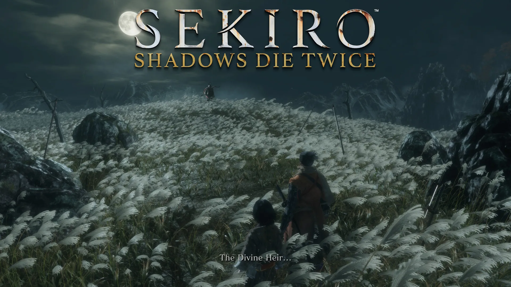

Meu jogo favorito: Sekiro Shadows Die Twice
Sekiro: Shadows Die Twice, da FromSoftware, é uma obra-prima que redefine o gênero Souls-like. Com um cenário inspirado no Japão feudal, o jogo coloca os jogadores na pele de Wolf, um shinobi em busca de vingança e redenção. Diferente de outros títulos da FromSoftware, Sekiro foca na agilidade, no domínio da espada e em mecânicas únicas de postura e deflexão, tornando cada combate um teste de habilidade.
Os ambientes imersivos, a narrativa envolvente e a dificuldade desafiadora fazem de Sekiro uma experiência marcante. É o jogo ideal para quem ama batalhas intensas e histórias profundas.
